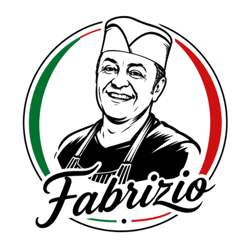
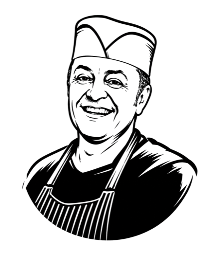

Margherita
10,00 €Tomate, mozzarella.
SignatureVég.


La vraie pizza napolitaine au cœur de Lourdes.
À deux pas du Sanctuaire, découvrez une cuisine italienne authentique, un service attentionné et des assiettes faites pour être partagées.
Avis Google · Plus de 1550 clients satisfaits
Une adresse pensée pour les voyageurs comme pour les habitués. Chaque détail compte, du four à la terrasse.
Pâte aérée, croûte soufflée, ingrédients italiens sélectionnés.
2 minutes à pied du lieu de pèlerinage le plus visité d'Europe.
Profitez de l'air libre dans une ambiance chaleureuse.
Un espace confortable pour déjeuner ou dîner au frais.
Commandez à l'avance et passez chercher votre commande.
De l'eau, de la farine, du sel, du temps. Beaucoup de temps : 48 heures de fermentation lente pour une mie aérienne, et un disque travaillé à la main.
Versée en spirale au cœur de la pâte. Tomates italiennes mûries au soleil de Campanie. Pas de sucre, pas de raccourci — le goût brut du sud.
Déposée à la main, en gouttes généreuses. Elle fond, file et caresse chaque bouchée — la signature napolitaine.
Salami épicé, olives noires, copeaux de parmesan 24 mois. Chaque ingrédient est choisi, posé, pensé pour le goût.
Quelques feuilles cueillies du jour, un filet d'huile d'olive sicilienne, une pincée d'origan. La touche finale avant le feu.
Cuisson éclair au feu de bois. La pâte gonfle, dore et se charbonne légèrement sur les bords. Une pizza prête à être partagée.
Quelques signatures à découvrir sur place. Notre carte complète est disponible plus bas.
Tomate, mozzarella.

Mozzarella, mortadella, burrata, roquette, pistache.

Tomate, mozzarella, chorizo, gorgonzola.

Mozzarella, crème fraîche, burrata, crème de truffe, roquette.

Mascarpone, biscuits imbibés d'espresso, cacao amer — recette familiale.
Antipasti, pizzas, salades, desserts, boissons — toutes nos recettes.

Profitez de Lourdes en extérieur dans une ambiance conviviale et chaleureuse, baignée de la lumière des Pyrénées.

Un espace confortable pour déjeuner ou dîner au frais après une journée de visite ou de pèlerinage.

Une adresse vivante, généreuse et authentique, pensée pour partager un vrai moment italien — comme à Naples.
Situé à quelques pas du Sanctuaire, Made in Italy est l'adresse idéale pour une pause italienne après une journée de visite. Nous accueillons familles, couples, groupes et voyageurs dans un cadre chaleureux et moderne.

Des recettes italiennes généreuses, des produits sélectionnés et l'esprit de Naples dans chaque assiette.
Made in Italy est né d'une envie simple : offrir à Lourdes une adresse italienne sincère, chaleureuse et généreuse. À deux pas du Sanctuaire, notre restaurant accueille locaux et voyageurs autour d'une cuisine conviviale, de pizzas napolitaines authentiques et d'un cadre confortable.

Une pâte fermentée pendant 48 heures, une cuisson intense au four à haute température, et des ingrédients d'origine italienne triés sur le volet. Notre pizzaiolo respecte la tradition napolitaine dans chaque geste.
À 2 minutes à pied du Sanctuaire, accessible facilement à pied depuis le centre-ville, les parkings et les principaux hôtels de pèlerinage. Le point de pause idéal entre deux visites.
Une terrasse extérieure ombragée pour les belles journées, et deux salles intérieures climatisées pour vous accueillir au frais — y compris pendant les jours d'affluence.
Nous accueillons les familles avec un menu enfant, les groupes (pèlerinages, séminaires, voyages organisés) sur réservation, et les voyageurs solo ou en couple en quête d'une vraie pause italienne.
Demander un devis groupe


Made in Italy vous accueille à Lourdes, à quelques pas du Sanctuaire, pour un déjeuner, un dîner ou une pause italienne authentique.